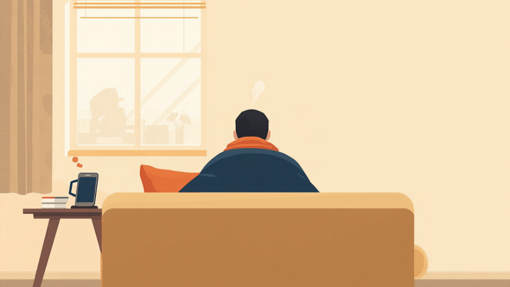
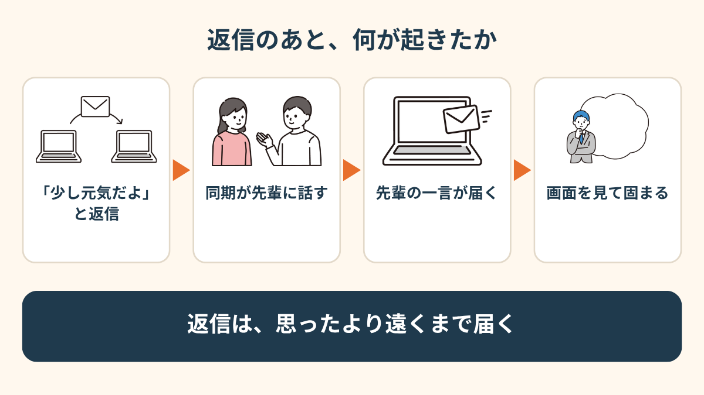
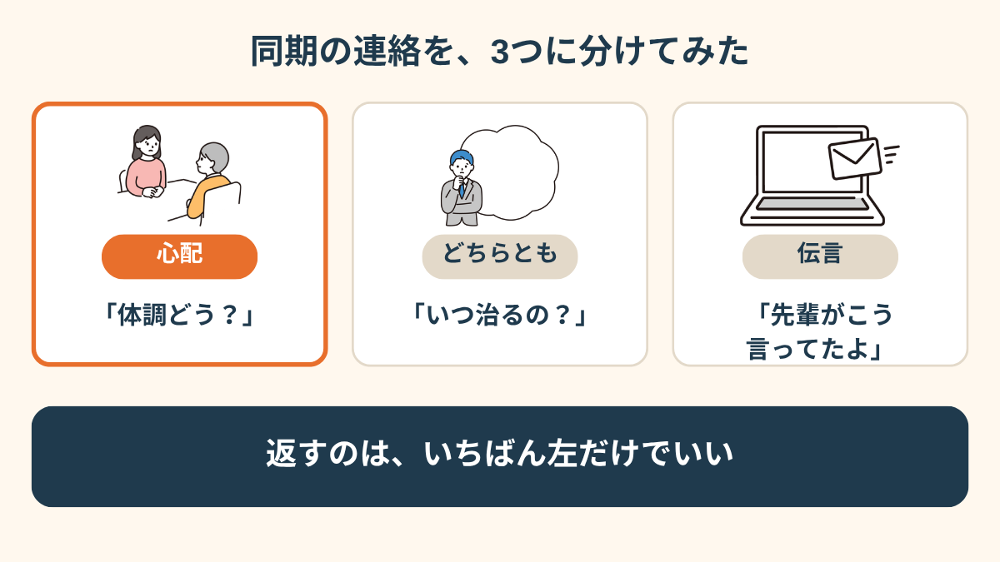
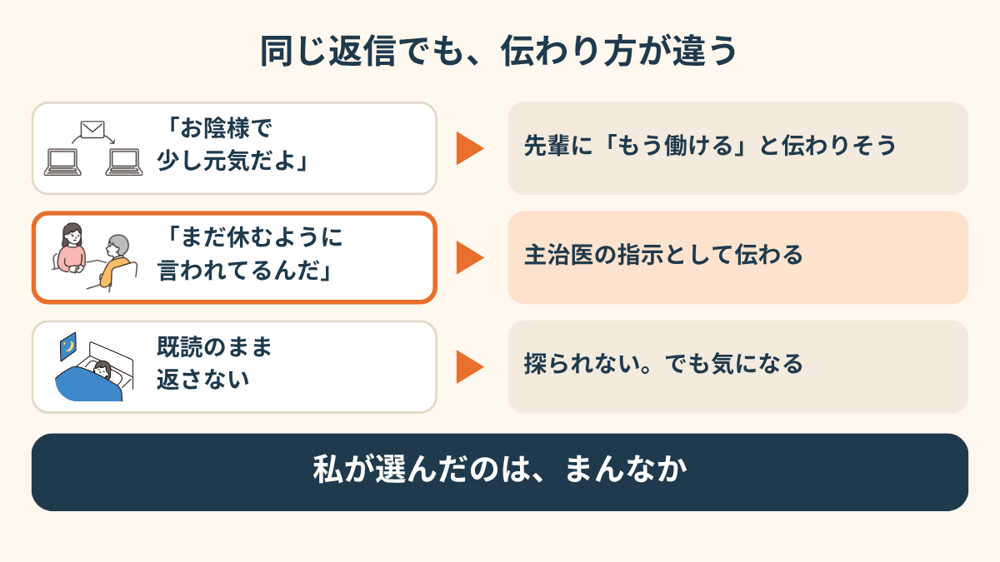
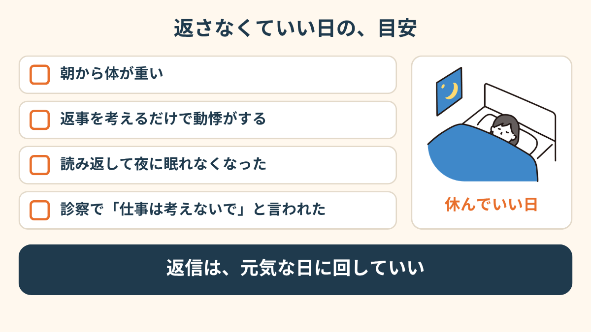
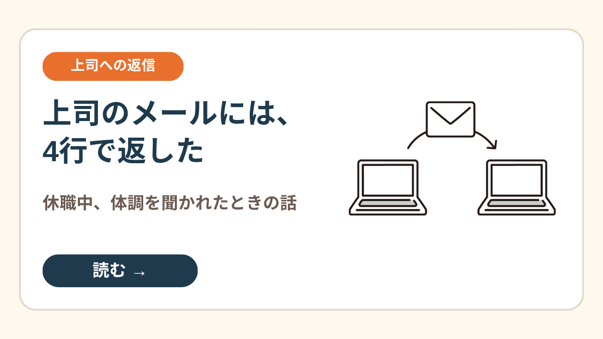
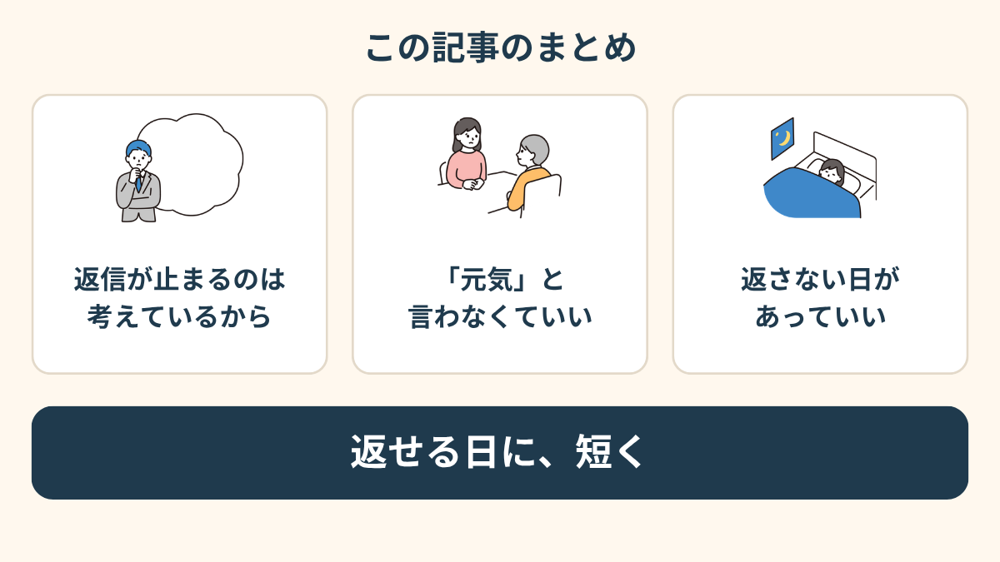

そう返しただけでした。
その日の夜、同期から届いたのは、会社の先輩が言っていたという一言でした。
同期は、悪い人じゃなかった
休職して、3週間目。
主治医に言われたのは、まず3ヶ月の休養です。
会社で私の休職を知っているのは、産業医と店長だけ。
ほかの人には、「体調不良で休んでる」で通っていました。
同期は、入社した頃から同じ係。
休む前も、休んでからも、たまに会って、愚痴とかしょうもない話をしてた相手です。
正直、会社の人の中で、いちばん話しやすかった。
その同期から、ちょくちょくLINEが来るんです。
「体調どう？」「元気になった？」って。

「少し元気だよ」を送った夜
その日は、深く考えずに返しました。
心配かけたくなかったし、3週間目で、ほんの少しだけ朝が楽になってたのも本当だったので。
夜に、返事が来ました。
「よかった。そういえばね」と、そこから続きがあって。
ある先輩が、こう言っていたそうです。
私が休んでいるから、仕事を押しつける人がいなくて困る。
休めるなら、自分が休みたいくらいだ、と。
同期に悪気はないんです。たぶん、「みんな気にしてるよ」くらいの気持ちで教えてくれた。
でも私は、画面を見たまま動けなくなりました。
「元気」と書いた自分が、急に間違いだった気がして。
返信ひとつが、思ったより遠くまで届いてしまった、そんな感覚でした。

「元気って送った瞬間に、あ、これ誰かに言われるやつだ、って思いました。実際その通りで。別に誰も悪くないのに、スマホ見るのが怖くなって、通知を切りました」
連絡を、3つに分けてみた
3日くらい、LINEを開けませんでした。
開けない自分も嫌で、紙に書き出してみたんです。同期から来た言葉を。
「体調どう？」は、心配。
「いつ治るの？」は、心配にも、探りにも聞こえる。
「先輩がこう言ってたよ」は、ただの伝言。
全部ひとまとめで「同期から連絡が来た」と思うから、体が固まってた。
分けてみたら、私が返すべきなのは、いちばん上の「心配」だけでした。


「元気です」が、いちばんこわかった
返信で何がこわかったかというと、「元気」という言葉でした。
元気と言うと、もう働けると思われそう。
休職の話をしてるのに、元気ですと言った人が、数か月後に「もう戻れるよね」と言われる想像まで、勝手にしてました。
で、次から変えたんです。
「ありがとう。まだ休むように言われてるんだ」
これは、私の気持ちじゃなくて、主治医の指示です。
事実だけだから、嘘じゃない。弱音でもない。
自分の言葉で説明しなくていいだけで、だいぶ息がしやすくなりました。

「返信を半日寝かせるのが普通になってました。角が立たない言い方を考えてるだけで、1日分の元気を使い切る感じで。結局、『主治医に言われてて』って書いたら、それ以上聞かれなくなったんです」
返さない日を、先に決めておいた
主治医に、同期のことを聞いてみました。
返ってきたのは、「友達と会うのは問題ないですよ。ただ、仕事のことは考えないで」。
同期は、同僚というより、友達に近い。
だから会うのはやめない。でも、LINEは「しんどい日は返さない」と決めました。
決めたあと、一言だけ送りました。
「返信遅い日があるけど、気にしないでね」。
正直、先輩の話はもう聞きたくない、とまでは言えなかったです。
言えないままの日も、あっていいと思ってます。


上司から聞かれたときは、どう返したか →
この記事に、聞いてみたいことはありますか？
「自分の場合はどうなんだろう」と思ったことを、気軽に書いてみてください。いただいた質問は個別にお返事したうえで、匿名で記事にすることがあります。